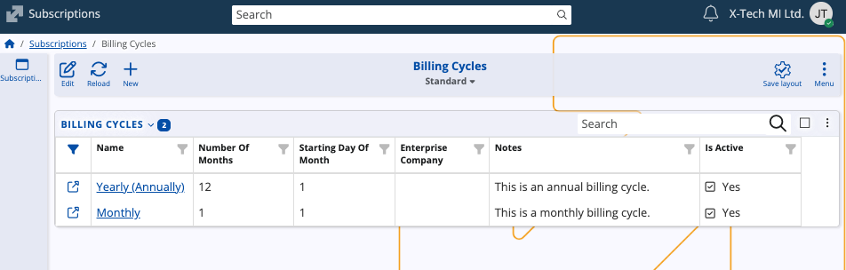

Subscriptions
The Subscriptions submodule manages agreements for periodic delivery of products or services to customers. It supports long-term arrangements where billing and fulfillment can occur repeatedly over a predefined interval.

In the larger CRM context, subscriptions extend the standard order-to-invoice flow by formalizing continuous customer commitments and ensuring that recurring charges are issued at the correct schedule.
Structure
Subscriptions
The Subscriptions panel contains the main records defining active or planned subscription agreements.
Each subscription consists of:
- Enterprise Company – The company that issues the subscription.
- Customer – The party receiving the subscription. This field is required.
- From Date / To Date – Define the validity period of the subscription.
- Billing Cycle – Determines how often billing documents will be generated (e.g., monthly, yearly). Leaving this blank means the subscription will not be auto-billed.
- Notes – Additional information relevant to the subscription.

The Lines panel lists products included in the subscription. These lines represent the chargeable components of the subscription.
When billing occurs, each line becomes part of the generated billing document according to the assigned cycle.
Billing Cycles
The Billing Cycles panel defines billing schedules used by subscriptions. Each cycle describes when the system should issue new bills.
A billing cycle contains:
- Name – The designation of the cycle (e.g., Monthly, Yearly).
- Number of Months – Number of months between billing.
- Starting Day of Month – The day when billing is issued.
- Enterprise Company – The company to which the billing cycle applies.
- Notes – Additional cycle-related information.

Billing cycles are custom and can be reused across multiple subscriptions.
Note
The screenshots taken for this article are from v.26 of the platform.